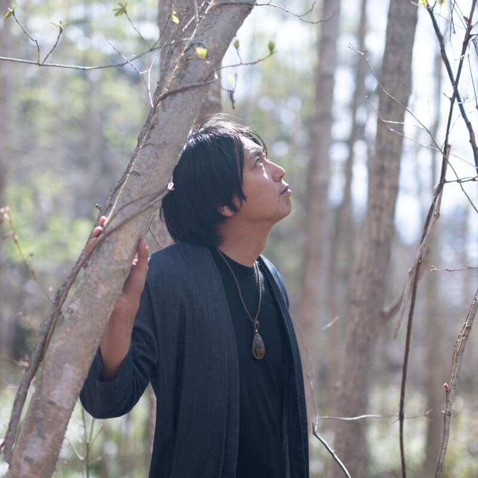

湖はんの森のリトリート
感覚を「ひらく」新しい食の体験をする2泊3日
2022.08.15(mon) 14:00 - 08.17(wed) 13:00 ｜
at Blue Village, Hokkaido Toya
scroll
ABOUT
「食べること」
一体となってつながること。
宇宙の情報を受けとること。
ルーツを思い出すこと。
いのちを受け継ぎ、また繋いでいくこと。
この場所にあるパワフルな自然のエレメントに触れながら、食べることを通して、
「自分自身や他のいのちと深くつながり、いのちをつむぎ・つないでいく」という
本来の「食」の大切な営みを体験するリトリートです。
Blue Villageの土地でキャンプしながら、大地に一番近いところで眠り、
湧水から朝を迎える2泊3日を通して、
みなさんの感覚を「ひらく」新しい食の体験をお楽しみください！
INFORMATION
-
- 日程
- 8月15日(月) 14時 〜 8月17日(水) 13時
-
- 場所
- 北海道洞爺 BlueVillage
詳しい場所は参加者の方にお知らせします。
車の場合 ：新千歳空港から約2時間。
電車の場合：最寄の洞爺駅から車で20分。(電車で来られる方は駅まで迎えに行きます。) -
- 参加費
- 3万円
-
- 定員
- 5名
-
- 持ち物
- 水筒、マイ食器、着替え、長袖長ズボン、バスタオル、歯ブラシ、寝袋(お持ちの方)
MEMBER
-

うのかなCosmic food creator
宇宙から微生物まで、「つながる」食の体験を。
1990年東京生まれ。大学院で行動分析学を学び療育の仕事に携わる。偏食やこだわりの強い子どもたちの「健康的なおやつ」としてオーガニックグラノーラ「kananola」を開発。
その後東京から洞爺湖へ移住し、子育てと畑をしながら、これまで感じていた「食べることで、過去や未来、他のいのちとつながる感覚」を、インスタレーションを通して体験する場を作ったり、オンラインサロン【湖はんの森の薬膳salon】を主宰している。 -

むらかみ よしみPhotographer/Designer
50年後、100年後もあってほしいと願う、想いをカタチに。
1986年長野生まれ、千葉育ち。外国語大学にてコミュニケーションを専攻。卒業後はアパレルで販売員として働くが、専門学校を経てWebデザイナーに転身。チームラボにてUI/UXデザイナーとして経験を積む。現在は、フリーランスとしてデザインを中心に、ディレクション、撮影など多方面で、様々なプロジェクトに関わる。アーティストとクリエイティブユニットを組み、アート×デザインでの領域を更新し続けている。母校の専門学校にて、講師として次世代のデザイナー育成にも携わる。
-

宇野 豪佑Hypno therapist
内的世界への案内人
Blue Village の発起人。インナージャーニー旅行会社を主宰。20代から人と自然が調和する暮らしの在り方やネイティブ・アメリカンやペルーのシャーマンが持つ、古代からの叡智の探求を続ける。北海道・洞爺湖畔の森に水が湧く土地との出会いをきっかけに、学んだ叡智を暮らしの中で実践する場としてBlue Villageを創り始めた。シャーマニックな技法のひとつとして、ヒプノセラピーを学び資格を取得し、内的世界への案内人としてインナージャーニープログラムの企画やセッションを行う。
-
中村 峻介Artist
目に見えない世界を彩り続ける
1987年生まれ。多摩美術大学美術学部絵画学科油画専攻を卒業後、チームラボ株式会社に入社。独立後、アーティスト活動を開始。ペルーでのシャーマンのセレモニー、スウェーデンでのネイティブアメリカンの通過儀礼等の経験などを通し、深層心理、量子論、天文学、民俗学などに関心を寄せる。それらを基に、時間や空間を超えるもの、意識と無意識、見えるものと見えざるものの『境界線』という、自己と他者を縁取るものや、世界で生じている曖昧かつ不可視な事象について、抽象絵画やワークショップ等といった多様なメディアを通して、問いかける。